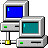
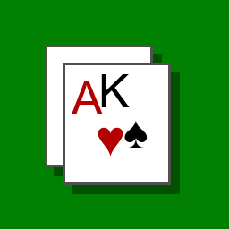
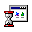

My Computer

Network Neighborhood
WordPad

FreeCell
Welcome
Document - WordPad
File
Edit
View
Insert
Format
Help
Welcome to Microsoft Windows 95
Release Date: August 24, 1995
Windows 95 introduces the revolutionary Start button, 32-bit preemptive multitasking, Plug and Play hardware support, and the Desktop user interface.
My Computer
Back
File
Edit
View
Help
Solitaire
Game
Help
♠
♥
♦
♣
FreeCell Game #1995
Game
Help
♠
♥
♦
♣
Minesweeper
Game
Help
010
000
MS-DOS Prompt
Microsoft(R) Windows 95
(C)Copyright Microsoft Corp 1981-1995.
C:\WINDOWS>
untitled - Paint
File
Edit
View
Image
Options
Help
Welcome
Welcome to Windows 95
Did you know...
To open a program, you just click the Start button, and then point to Programs.
Recycle Bin
Empty Recycle Bin
File
Edit
View
Help
The Recycle Bin is empty.
Network Neighborhood
File
Edit
View
Help
Entire Network
Workgroup
Display Properties
Run

Type the name of a program, folder, or document, and Windows will open it for you.
Open:
Arrange Icons
Refresh
New >
Properties